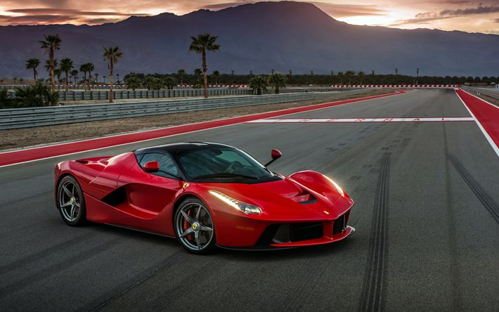

LaFerrari
A LaFerrari é um superesportivo híbrido de produção limitada da Ferrari, combinando desempenho extremo com inovação tecnológica.
Sobre a LaFerrari
Lançada em 2013, a LaFerrari representa o ápice da engenharia da Ferrari. Equipado com um motor **V12 de 6.3 litros** acoplado a um sistema híbrido, o carro gera um total de 950 cv, permitindo acelerações impressionantes. Seu design aerodinâmico e arrojado, aliado a uma construção leve em materiais como fibra de carbono, proporciona uma performance incrível nas estradas e pistas.
A LaFerrari é capaz de acelerar de 0 a 100 km/h em menos de 3 segundos e alcançar uma velocidade máxima superior a 350 km/h, tornando-se um dos carros mais rápidos do mundo. Seu sistema híbrido, que combina o motor a combustão com motores elétricos, permite não apenas um desempenho excepcional, mas também maior eficiência e menor emissão de CO2.
Com tração nas **quatro rodas** e uma suspensão ativa, a LaFerrari é capaz de oferecer uma experiência de condução precisa e emocionante, combinando tecnologia de ponta com a tradicional paixão e excelência da Ferrari. Apenas **499 unidades** foram produzidas, tornando a LaFerrari um dos carros mais desejados e exclusivos da marca.